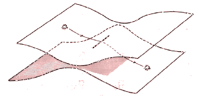

| Sintaxis y Metasintaxis // Hipótesis La sobreabundancia de información equivale
a visualizar una trama. Cualquier palabra, o proceso, o forma empujada
al límite de su potencial, invierte sus características
y la vuelve una forma complementaria. // también ver: Paisajes de Papel En su búsqueda por visualizar espacios extra dimensionales, el matemático alemán Georg Riemann desarrolló una metáfora muy sencilla: dos hojas de papel -cada una representando un universo bidimensional- pegadas en un pequeño tramo lineal ubicado al centro de cada hoja. Vistas en corte serían dos hipérbolas cuyas curvas se encuentran en el centro. Luego imaginó a un ser bidimensional transitando de una hoja a la otra pasando por este tajo - abertura. Este tránsito consiste, efectivamente en un salto extra - dimensional: se ha movido de un mundo a otro con las mismas leyes, a otra "planilandia". Quizá, este ser está desorientado porque el paisaje ha cambiado a pesar de la coherencia lineal de su traslado. Para un espectador tridimensional, quizá pueda haberse reflejado, pero para este ser bidimensional, este planilandés, este reflejo no es perceptible. Este tránsito momentáneamente ha creado la tercera dimensión que paradójicamente consiste en un tajo vacío y carente de espacio concreto.  Este ejemplo llevado a la vida cotidiana: Al subir a un ascensor, nosotros nunca vemos el conducto vertical de ascenso, a pesar de ello, sabemos por un proceso de inferencia que nos hemos movido algo puesto que el paisaje cambia ostensiblemente cuando las puertas del ascensor de reabren. Primero: Cabe reconocer la desventaja del texto escrito para traer una presencia espacial respecto de una imagen. Esta diferencia, coyuntural en el debate del hipertexto, ha diferenciado desde siempre a las artes verbales de las artes visuales.
Segundo y más importante: este modelo de representación
de dos universos planos y paralelos conectados por este "agujero
negro de cero largo" es un modo de visualizar la vinculación
de los textos. La física lo llama "superficie multiconectada",
en la lectura se llama "hipertexto". Topología y Lectura La Topología es una rama de las matemáticas que normalmente no hace ninguna referencia a los números, podríamos decir que su campo es "no numérico". Para un topólogo un espacio de hipertexto se vería como un conjunto de puntos, o mejor dicho, nodos conectados por vínculos. I
+ - - - - - - - - - - + 1 <-
[Sup. o Índice] Aunque este esquema construye un triángulo, los topólogos (a diferencia de los geómetras) no se interesan por el largo que puedan tener estos vínculos o los ángulos que formen entre sí; sólo que hay tres nodos y que cada uno está conectado con el otro. En hipertexto, estos nodos serán documentos,
por ejemplo, un índice y dos capítulos. En este es el ejemplo
más básico pero nótese que el vínculo entre
dos nodos cualquiera variará su nombre dependiendo de la dirección. Esto obliga a aumentar la cantidad
de indicaciones y vínculos (Anterior, Siguiente, Superior, Índice
general, etc.) y se comienza a hilvanar un "espacio" de lectura
donde hay distintos horizontes y niveles de profundidad, artículos
periféricos y ejes centrales. Esto es lo que comúnmente
se llama en internet "mapa del sitio" donde se visualiza la
totalidad de niveles y subniveles expresados jerárquicamente en
una figura. La disciplina que concibe esta figura y se ocupa de las relaciones
topológicas cuidando la orientación del lector se llama
arquitectura de la información |